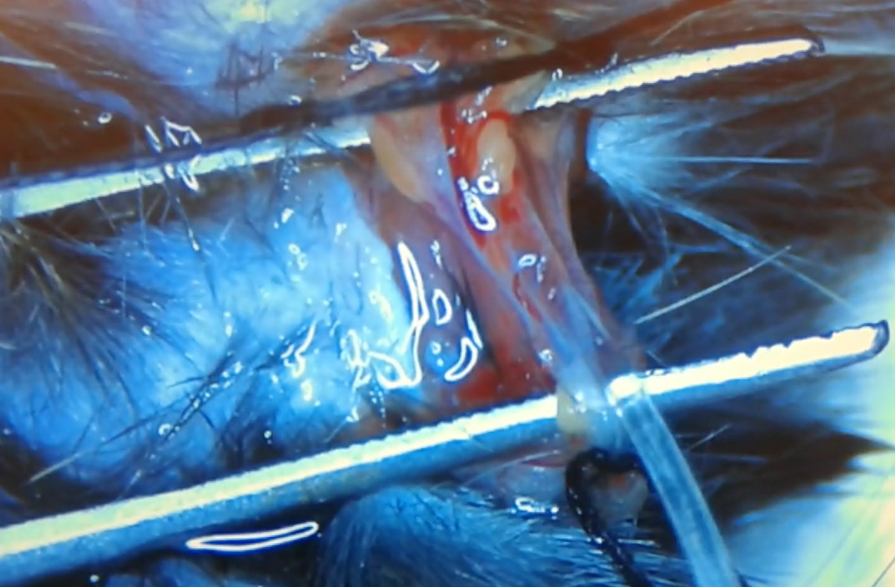

Watch full videoMouse Jugular Vein Catheterization
Open video in Google Drive ↗
Selected videos from the Hato Lab, highlighting teaching materials, intravital kidney imaging, and myeloid cell dynamics.
These videos are provided as teaching resources.

Watch full videoLive imaging of kidney injury, glomerular structure, mitochondria, and renal tubules.
Red: TMRM (mitochondrial membrane potential); Green: autofluorescence; Blue: DAPI (nuclei)
Red: Rhodamine-labeled LPS; Green: C57BL/6-Tg(CAG-EGFP)1Osb/J
Red: photoactivated mitochondrial Dendra2; Green: mitochondrial Dendra2 (not photoactivated)
Post-IRI. Bone marrow chimera generated by transplantation of mito-Dendra2 bone marrow into wild-type recipients. Green: mitochondrial Dendra2 (not photoactivated); dark green/orange: autofluorescence
Free calcein kinetics in the kidney. Free calcein kinetics in the kidney. Systemically administered calcein is filtered by the glomeruli, generating a luminal bolus that passes from the S1 to S2 segments. Calcein is also secreted into the S2 segment, and myeloid cells are calcein-positive. Green: calcein
Green: FITC-labeled inulin. Related to PMID:21784899
Green: Alexa488-P22 (60-nm icosahedral virus-like protein cage). Related to PMID:31424427
Green: pseudocolored tubular autofluorescence (originally acquired in the blue channel); Yellow, blue, purple, and pink: pseudocolored fluorescence lifetime regions identified by phasor analysis (right) and back-mapped onto the original blue-channel image (left). Related to PMID: 28250053
Intravital imaging of myeloid cells and related fluorescent reporters in the kidney.
Red: rhodamine-labeled Poly(I:C); Green: B6.129P-Cx3cr1tm1Litt/J (CX3CR1-EGFP); Blue: DAPI. Related to PMID: 25398784
Red: rhodamine-labeled Poly(I:C); Green: B6.129P-Cx3cr1tm1Litt/J (CX3CR1-EGFP); Blue: DAPI
Red: rhodamine-labeled Poly(I:C); Green: B6.129P-Cx3cr1tm1Litt/J (CX3CR1-EGFP); Blue: DAPI
Red: rhodamine-labeled Poly(I:C); Green: B6.129P-Cx3cr1tm1Litt/J (CX3CR1-EGFP); Blue: DAPI
Green: B6.129P-Cx3cr1tm1Litt/J (CX3CR1-EGFP)
Red: rhodamine-labeled Poly(I:C); Green: B6.129P-Cx3cr1tm1Litt/J (CX3CR1-EGFP); Blue: DAPI. Individual cells are tracked using the indicated colors.